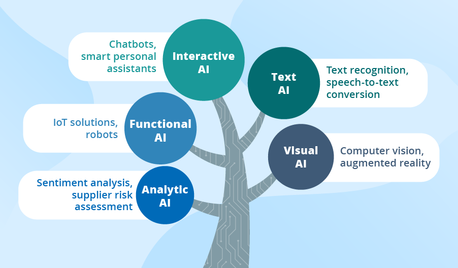
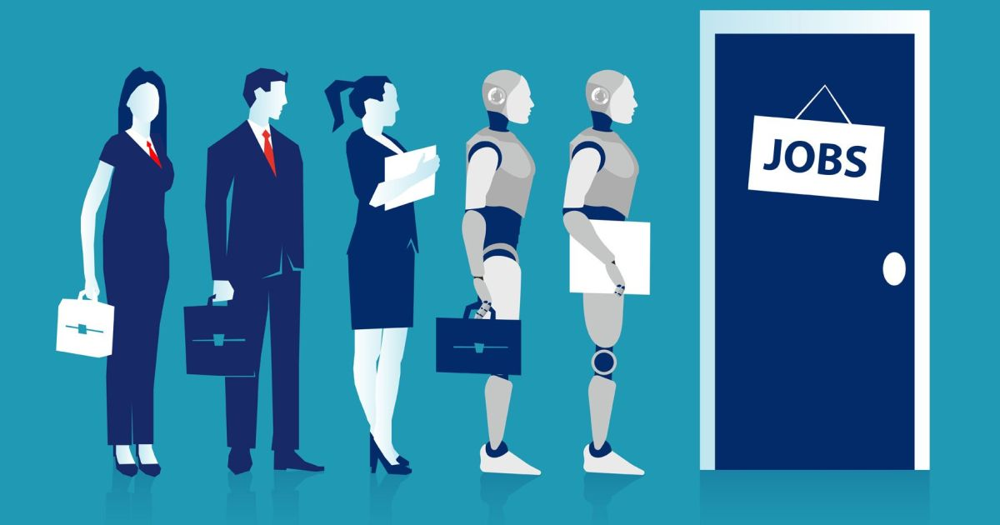
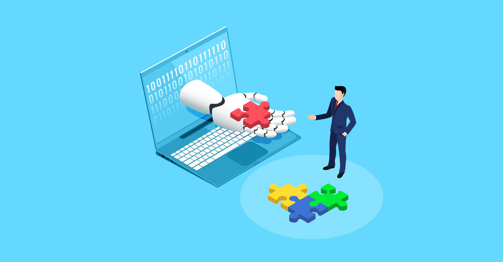

Introduction
It’s nearly the end of class. I look over and see someone on a website that generates text. I looked at the computer and memorized the link: chat.openai.com. 6 months later, ChatGPT has become very popular, and almost everyone has tried it out. With the advancement of artificial intelligence (AI), many people are worried about AI replacing their jobs. AI can simulate human intelligence by learning from large sets of training data. People often debate the impact of AI on jobs since AI has proven to be very capable of completing tasks faster and more efficiently than humans. AI will significantly impact jobs in the future because it will replace some jobs but can also complement many jobs and create new opportunities.
The Replacement of Jobs
AI will replace several jobs in the future because it can automate tedious tasks. A professor emeritus of information systems at Singapore Management University states in an article by CNBC, “As physical machines, software systems, and combinations of hardware and software get more capable as a result of AI-enablement, it is increasingly possible as well as economically viable to replace a greater share of the portions of the human work of today with machines” (Miller). In an age with such a large variety of jobs, some roles are more easily replaceable by AI than others. Jobs that involve repeatedly doing tedious tasks, for example, are perfect candidates for automation by AI (Kiderlin). Work done by AI can be quicker, higher quality, and cheaper than humans. AI can automate many tasks, and it doesn’t require a wage or breaks. Instead of humans, who can only work during the day, computers can run 24/7, making them more efficient than humans at completing tasks and projects. In conclusion, adopting AI will result in many layoffs because of its ability to work much more efficiently than us.
The Creation and Complimenting of Jobs
Although AI can replace many human workers, its adoption can also create and complement many jobs. A report in an article written by Goldman Sachs economists states that, “Although the impact of AI on the labor market is likely to be significant, most jobs and industries are only partially exposed to automation and are thus more likely to be complemented rather than substituted by AI” (Briggs and Kodnani). While AI may seem threatening, we will adapt to it just as we did with computers. AI will likely become something we need to embrace, and once we accept the change, it will most likely turn into something we rely on. Like computers, AI will speed up workflows by assisting us with our work. The rise of technology replaced jobs but also created many jobs. Generative AI may do the same thing, replacing jobs at first but eventually creating more jobs that weren’t possible before AI rose in popularity and development (“Generative AI could raise global GDP by 7%”). Instead of replacing humans completely, AI can create new opportunities for jobs that involve AI but still require a human element. As a result, some of the stress can be taken off of humans, allowing us to do more with less time because we can focus on more important things. Therefore, we can view AI as a tool rather than a threat because it will help us with productivity and create job opportunities.
Conclusion
Overall, AI will affect the workplace in the future by replacing some human jobs but also creating new opportunities and complimenting current ones. AI will undeniably replace humans in various areas, but it will also assist us in achieving tasks that we could not accomplish before. Everyone will have to adapt to the presence of AI in the workplace, and whether we like it or not, we will eventually have to accept it and work with it rather than against it. AI will even impact students like me, and the usage of AI may become a teaching topic in the future. Although AI still has a long way to go before it significantly impacts everyone, it is developing fast and will soon become very prominent to us.